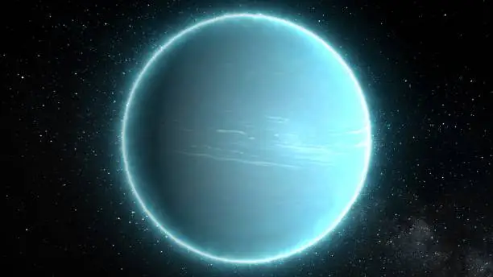
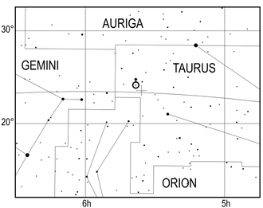
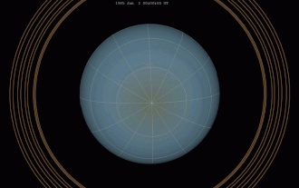
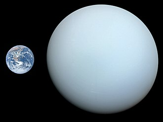

|
History
Like the classical planets, Uranus is visible to the naked eye, but it was never recognised as a planet by ancient observers because of its dimness and slow orbit.
William Herschel first observed Uranus on 13 March 1781, leading to its discovery as a planet, expanding the known boundaries of the Solar System for the first
time in history and making Uranus the first planet classified as such with the aid of a telescope. The discovery of Uranus also effectively doubled the size of
the known Solar System because Uranus is around twice the distance from the Sun as the planet Saturn.
Discovery
Before its recognition as a planet, Uranus had been observed on numerous occasions, albeit generally misidentified as a star. The earliest possible known observation
was by Hipparchus, who in 128 BC might have recorded it as a star for his star catalogue that was later incorporated into Ptolemy's Almagest. The earliest definite
sighting was in 1690, when John Flamsteed observed it at least six times, cataloguing it as 34 Tauri. The French astronomer Pierre Charles Le Monnier observed Uranus
at least twelve times between 1750 and 1769,[28] including on four consecutive nights.
William Herschel observed Uranus on 13 March 1781 from the garden of his house at 19 New King Street in Bath, Somerset, England (now the Herschel Museum of Astronomy),
and initially reported it (on 26 April 1781) as a comet. With a homemade 6.2-inch reflecting telescope, Herschel "engaged in a series of observations on the parallax of the fixed stars.
The power I had on when I first saw the comet was 227. From experience I know that the diameters of the fixed stars are not proportionally magnified with higher powers,
as planets are; therefore I now put the powers at 460 and 932, and found that the diameter of the comet increased in proportion to the power, as it ought to be, on the
supposition of its not being a fixed star, while the diameters of the stars to which I compared it were not increased in the same ratio. Moreover, the comet being magnified
much beyond what its light would admit of, appeared hazy and ill-defined with these great powers, while the stars preserved that lustre and distinctness which from many thousand
observations I knew they would retain. The sequel has shown that my surmises were well-founded, this proving to be the Comet we have lately observed
|
|
|
|
|
|
|
|


Position of Uranus (marked with a cross) on 13 March 1781, the date of its discovery
|
|
ORBIT
Uranus orbits the Sun once every 84 years. As viewed against the background of stars, since being discovered in 1781, the planet has returned to the point
of its discovery northeast of the binary star Zeta Tauri twice—in March 1865 and March 1949—and will return to this location again in April 2033.
AXIAL TILT
The Uranian axis of rotation is approximately parallel to the plane of the Solar System, with an axial tilt of 82.23°. (Depending on which pole is considered north,
the tilt can be described either as 82.23° or as 97.8°. The former follows the International Astronomical Union definition that the north pole is the pole which lies on Earth's North's
side of the invariable plane of the Solar System. Uranus has retrograde rotation when defined this way. Alternatively, the convention in which a body's north and south poles are defined
according to the right-hand rule in relation to the direction of rotation, Uranus's axial tilt may be given instead as 97.8°, which reverses which pole is considered north and which is
considered south and giving the planet prograde rotation.) This gives it seasonal changes completely unlike those of the other planets. (Pluto and the protoplanet-asteroid 2 Pallas also
have extreme axial tilts.) Near the solstice, one pole faces the Sun continuously and the other faces away, with only a narrow strip around the equator experiencing a rapid day–night cycle,
with the Sun low over the horizon. On the other side of Uranus's orbit, the orientation of the poles towards the Sun is reversed. Each pole gets around 42 years of continuous sunlight,
followed by 42 years of darkness. Near the time of the equinoxes, the Sun faces the equator of Uranus, giving a period of day–night cycles similar to those seen on most of the other planets.
VISIBILITY FROM EARTH
The mean apparent magnitude of Uranus is 5.68 with a standard deviation of 0.17, while the extremes are 5.38 and 6.03.This range of brightness is near the limit of naked eye visibility.
Much of the variability is dependent upon the planetary latitudes being illuminated from the Sun and viewed from the Earth.Its angular diameter is between 3.4 and 3.7 arcseconds, compared
with 16 to 20 arcseconds for Saturn and 32 to 45 arcseconds for Jupiter.At opposition, Uranus is visible to the naked eye in dark skies, and becomes an easy target even in urban conditions
with binoculars.On larger amateur telescopes with an objective diameter of between 15 and 23 cm, Uranus appears as a pale cyan disk with distinct limb darkening. With a large telescope of 25
cm or wider, cloud patterns, as well as some of the larger satellites, such as Titania and Oberon, may be visible
In March 2007, it was found that the variation in radio emissions from the planet did not match Saturn's rotation rate. This variance may be caused by geyser activity on Saturn's
moon Enceladus. The water vapor emitted into Saturn's orbit by this activity becomes charged and creates a drag upon Saturn's magnetic field, slowing its rotation slightly relative
to the rotation of the planet.
|
|
|
|
|
|
|
|

Simulated Earth view of Uranus from 1986 to 2030, from southern summer solstice in 1986 to equinox
in 2007 and northern summer solstice in 2028

Size comparison of Earth and Uranus
|